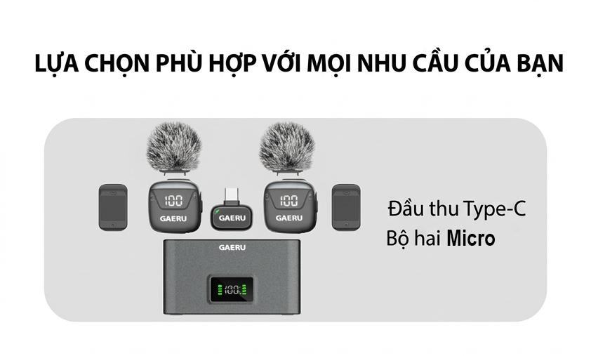
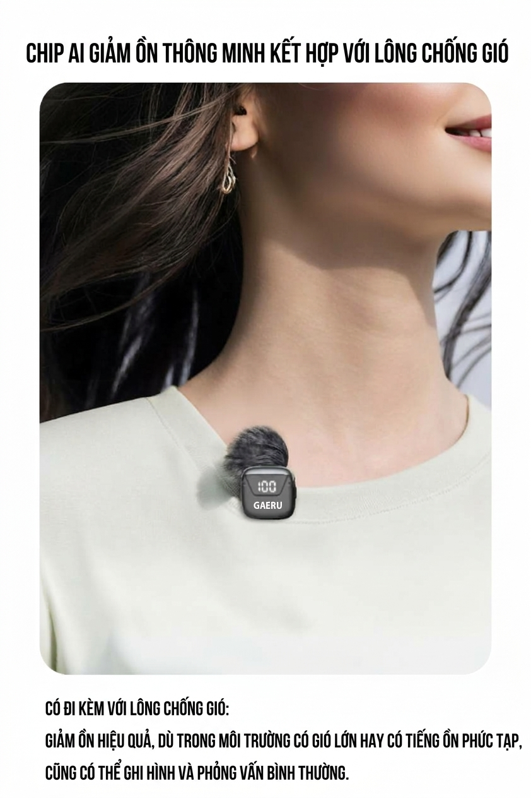
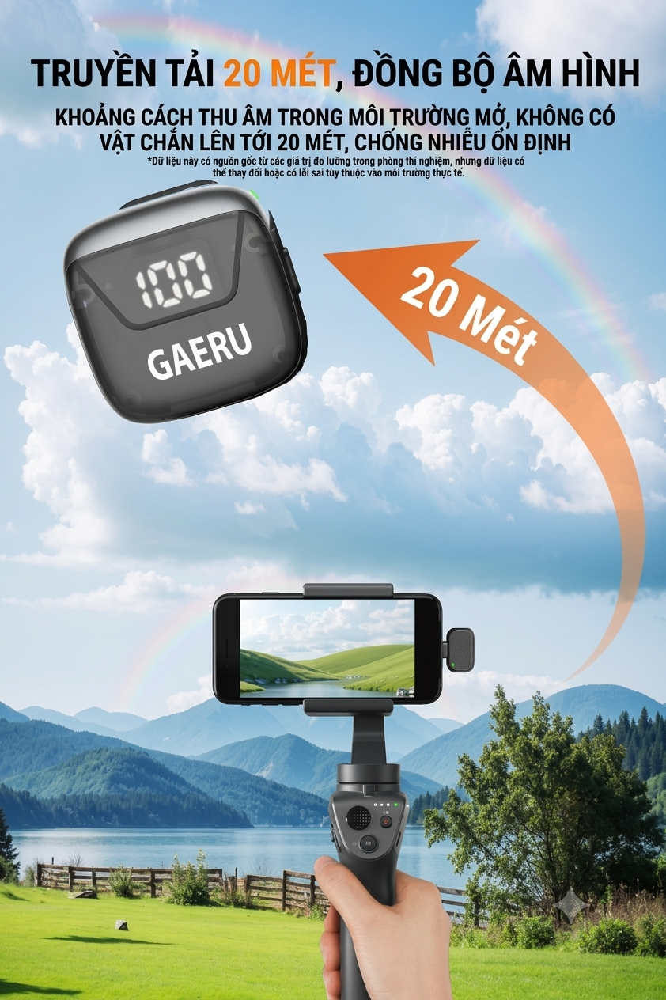
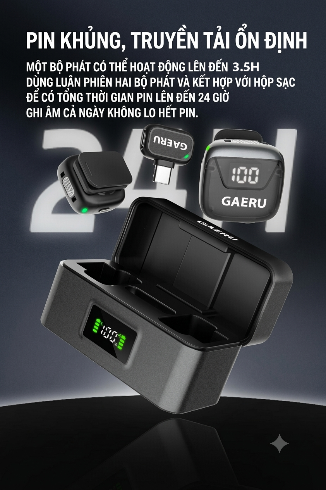

Hai ngu?i cùng k? chuy?n
M?t d?u thu h? tr? d?ng th?i hai b? phát. Thu âm da hu?ng 360° cho vlog, ph?ng v?n và livestream.
GAERU M3 · MICRO KHÔNG DÂY CÓ H?P S?C
T? vlog d?u tiên d?n cu?c trò chuy?n hai ngu?i. Hai micro nh? g?n cùng h?p s?c, s?n sàng theo b?n m?i ngày.
Ch?n phiên b?n
NH? G?N Ð? B?T Ð?U
M?t d?u thu h? tr? d?ng th?i hai b? phát. Thu âm da hu?ng 360° cho vlog, ph?ng v?n và livestream.
K?t h?p bông l?c gió d? h? tr? thu gi?ng nói ngoài tr?i. Hi?u qu? ph? thu?c m?c ?n, v? trí micro và môi tru?ng th?c t?.
Màn hình hi?n th? ph?n tram pin giúp b?n ch? d?ng chu?n b? tru?c m?i bu?i quay.
C?t gi? và s?c micro trong h?p. Ch?n dúng phiên b?n d?u thu ho?c b? chuy?n d?i cho thi?t b? c?a b?n.
GAERU TRONG CU?C S?NG C?A B?N
Cài micro lên áo, thu th? và nghe l?i tru?c khi ghi hình. T? vlog cá nhân d?n cu?c trò chuy?n, gi? ph?n chu?n b? th?t don gi?n.
ÂM THANH THEO B?N
Thu âm 24-bit / 48 kHz, k?t h?p di?u ch?nh d? l?i và gi?i h?n âm lu?ng t? d?ng. Kho?ng cách truy?n lên d?n 20 m trong không gian m?, không v?t c?n; k?t qu? th?c t? tùy môi tru?ng.


S?N SÀNG CHO BU?I QUAY TI?P THEO
M?t b? phát ho?t d?ng lên d?n 3,5 gi?. Luân phiên hai b? phát và k?t h?p h?p s?c cho t?ng th?i lu?ng lên d?n 24 gi?. Th?i lu?ng th?c t? thay d?i theo cách s? d?ng.

CHI TI?T THI?T B?
| Hu?ng thu | Ða hu?ng 360° |
|---|---|
| Âm thanh | 24-bit / 48 kHz |
| Áp su?t âm thanh t?i da | 120 dB |
| T? l? tín hi?u trên nhi?u | 100 dB |
| Pin b? phát / h?p s?c | 70 mAh / 500 mAh |
GI?I ÐÁP NHANH
Có. Ð?u thu h? tr? d?ng th?i hai b? phát. Thu th? t?ng micro trong ?ng d?ng b?n s? d?ng tru?c khi b?t d?u.
B? co b?n dùng d?u thu Type-C. Các l?a ch?n chuy?n d?i du?c hi?n th? t?i trang ch?n phiên b?n. Ki?m tra c?ng k?t n?i, kh? nang nh?n micro ngoài c?a thi?t b? và ?ng d?ng; ch?n Chat ngay n?u c?n d?i chi?u.
M?t b? phát ho?t d?ng lên d?n 3,5 gi?. 24 gi? là t?ng th?i lu?ng khi luân phiên hai b? phát và k?t h?p h?p s?c, không ph?i m?t micro thu liên t?c 24 gi?.
Trong môi tru?ng m?, t?m nhìn th?ng và không có v?t c?n. V?t c?n, nhi?u và di?u ki?n s? d?ng có th? làm gi?m kho?ng cách th?c t?.
CÂU CHUY?N TI?P THEO B?T Ð?U T? B?N